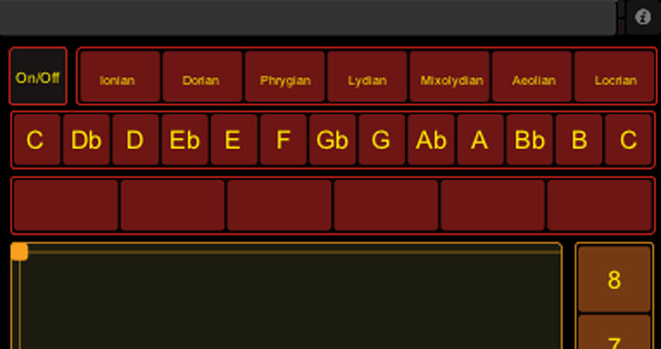
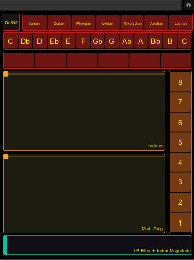
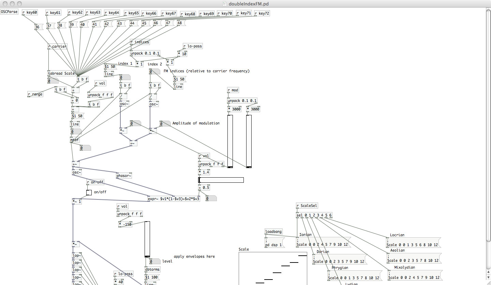
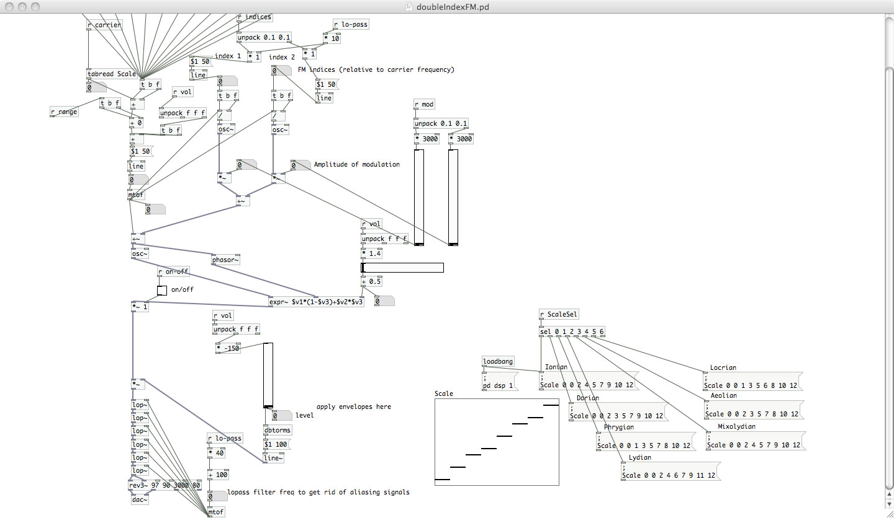
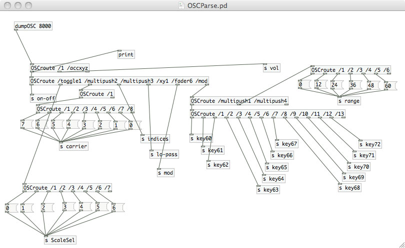

Ambient Expression
There's an app for that
Tasked with creating an interface to control a double frequency modulated oscillator, I set out to create a TouchOSC patch on the iPad to harness the dreamlike state of ambient music combined with the expressivity musicians come to expect from instruments. This led to a dynamic instrument that was capable of several different things, and could stand alone as a composition tool, or enhance an ensemble.
Screenshots and video:
TouchOSC controller
Main patch
Bottom part of main patch
OSC parser